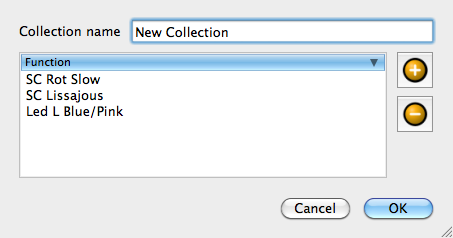

The collection editor, as its name suggests, is used to edit collection functions.
Note: Collections don't use a speed bus; each function you include in a collection has its own speed bus setting.
| Collection name | Change the name of the collection. |
| Add an existing Function to the collection. The order of the functions has no practical meaning. | |
| Remove the selected functions from the collection. |